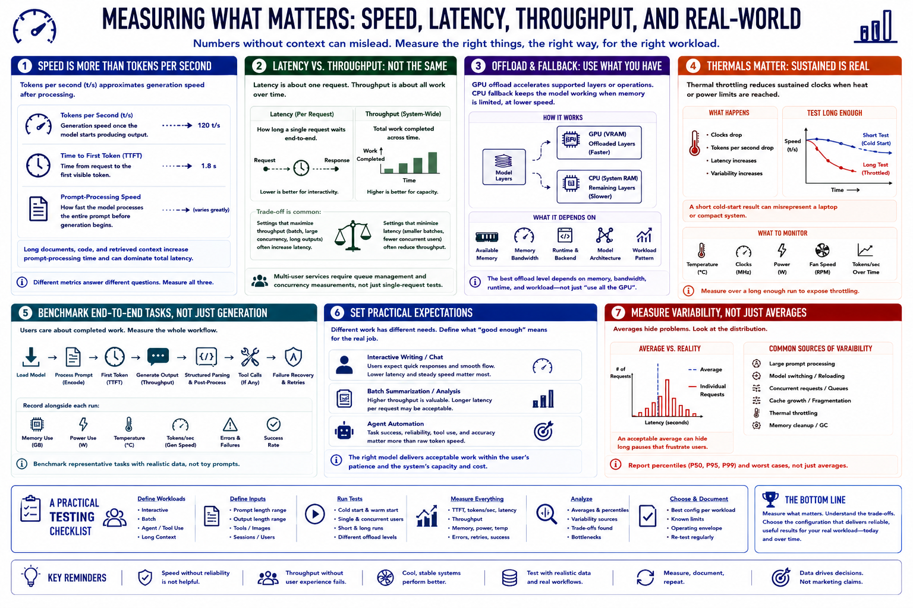

Performance Expectations
Connecting to LMS... Progress: in progress

Narration
Tokens per second approximates generation speed after processing. Time to first token includes request setup and prompt evaluation before visible output. Prompt-processing speed becomes especially important for long documents, code, and retrieved context.
Latency describes how long one request waits, while throughput describes total work completed across time. A setting that improves batch throughput may increase interactive latency. Multi-user services require queue and concurrency measurements.
GPU offload can accelerate supported layers or operations. CPU fallback allows models to run when accelerator memory is limited, but it may reduce speed. The best offload level depends on memory, bandwidth, runtime, and workload.
Thermal throttling reduces sustained clocks when heat or power limits are reached. Monitor performance over a long enough test to expose it. A short cold-start result can misrepresent a laptop or compact system.
Benchmark end-to-end tasks, not only generation. Include model load, prompt processing, first token, output, structured parsing, tool calls, and failure recovery where relevant. Record memory, power, temperature, and errors.
Set practical expectations. Interactive writing may tolerate one speed, batch summarization another, and agent automation may care more about task success than raw tokens. The right model delivers acceptable work within the user's patience and system capacity.
Measure variability, not only averages. A system with acceptable average latency may still produce long pauses during large prompts, model switching, concurrent requests, cache growth, thermal throttling, or memory cleanup.